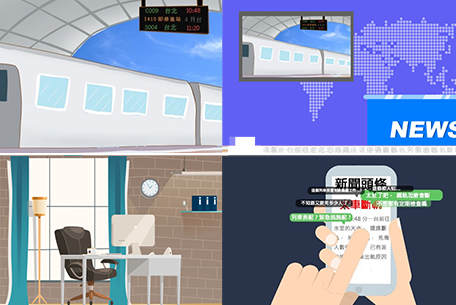

— 動畫設計 —
簡介
此為高中動畫課小組作業，當時在組內負責劇本以及場景設計
故事大綱
故事中的男主角在上班搭高鐵，途中列車斷軌，他莫名的穿越回到了20年前，自己父親在10幾年前也因火車失事而死亡，他遇到了20年前的女主(列車長)，也是當時新聞所報的火車失事的列車長，因此他認為是這個列車長害自己爸爸死掉，所以對女主有所防備。
男主想調查此事，因此騙女主自己從外地留學回來，對環境不熟悉，而借住女主家，慢慢相處發現女主並非輿論中那麼壞，感覺事情有所隱情，，因此決定考律師幫女主打官司，火車失事還是發生了，大眾輿論導向女主害死了人，男主成功考上律師並勝訴，最後也順利回到20年後，女主也沒因此自殺，兩人在高鐵上重逢。